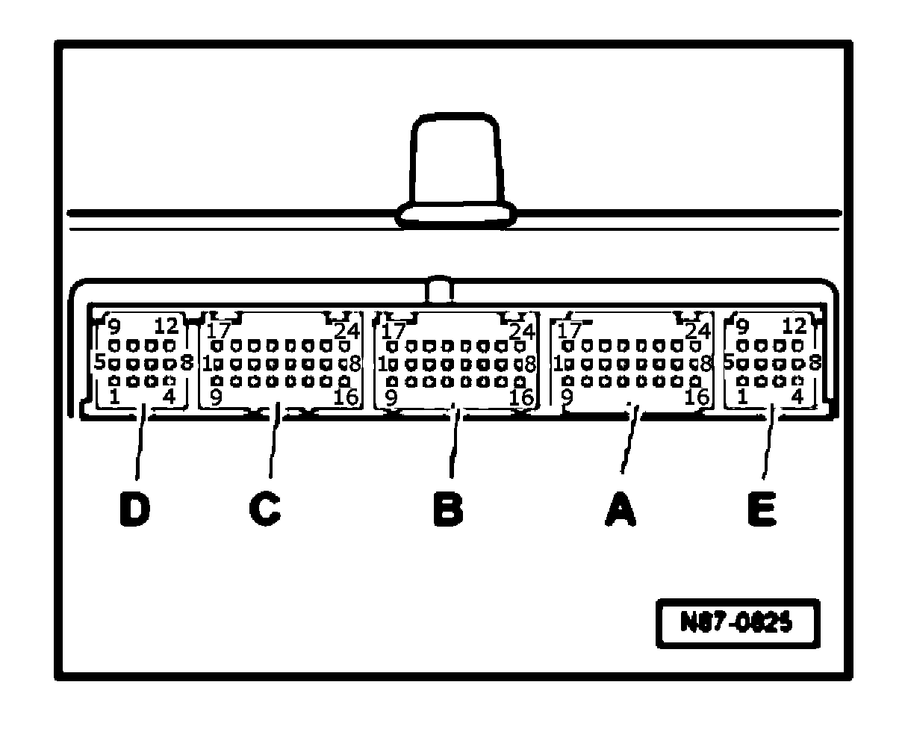

Climatronic Control Module -J255-, Multi-Pin Connector Assignments
Climatronic Control Module -J255-, multi-pin connector assignments
Special tools, workshop equipment, testers,
measuring instruments and auxiliary items required
- VAG 1598/42- test box
- VAG 1598/41 -2- adapter cable
- Template VAG 1598/41-2/4-

Multi-pin connector -A-, in wiring diagram T24ca
1 - Center Vent Adjusting Motor -V102- (closed)
2 - Defroster Flap Motor Position Sensor -G135-
3 - Recirculation Flap Motor Position Sensor -G143-, signal
4 - Fresh Air Intake Duct Temperature Sensor -G89-
5 - Right Front Upper Body Outlet Temperature Sensor -G386-, signal
6 - Right Footwell Vent Temperature Sensor -G262-, signal
7 - Left Footwell Vent Temperature Sensor -G261-, signal
8 - Actuator for temperature flap left -V158- (open)ft -V158- (open)
9 - Center Vent Adjusting Motor -V102- (open)
10 - Evaporator Temperature Sensor -G308-
11 - Footwell Flap Motor Position Sensor -G468-
12 - Potentiometer-actuator for temperature flap right -G221-, signal
13 - Potentiometer-actuator for temperature flap left -G220-, signal
14 - Center Vent Motor Position Sensor -G467-, signal
15 - Left Front Upper Body Outlet Temperature Sensor -G385-, signal
16 - Actuator for temperature flap left -V158- (closed)
17 - Servo motor for fresh-/recirculating air door -V154- (open)
18 - Servo motor for fresh-/recirculating air door -V154- (closed)
19 - Actuator for temperature flap right -V159- (open)
20- Actuator for temperature flap right -V159- (closed)
21 - Footwell Flap Motor -V261- (open)
22 - Footwell Flap Motor -V261- (closed)
23 - Side Vent Motor -V262- (open) - Dual-zone Climatronic only
23 - Left Side Vent Motor -V299- (open) - Four-zone Climatronic only
24 - Side Vent Motor -V262- (closed) - Dual-zone Climatronic only
24 - Left Side Vent Motor -V299- (closed) - Four-zone Climatronic only Climatronic only
Multi-pin connector -B-, in wiring diagram T24cb
1 - Right Side Vent Motor -V300- - Four-zone Climatronic only
5 - Right Front Defrost/Upper Body Shut-off Flap Motor Position Sensor -G317- - Four-zone Climatronic only
9 - Right Side Vent Motor -V300- - Four-zone Climatronic only
10 - Right Front Upper Body Outlet Position Sensor -G388- - Four-zone Climatronic only
11 - A/C Compressor Regulator Valve -N280-
14 - Right Footwell Flap Motor Position Sensor -G140- - Four-zone Climatronic only
17 - Right Center Vent Motor -V111- - Four-zone Climatronic only
18 - Right Center Vent Motor -V111- - Four-zone Climatronic only
19 - Actuator for temperature flap right -V159- - Four-zone Climatronic only
20 - Actuator for temperature flap right -V159- - Four-zone Climatronic onlyronic only
Multi-pin connector -C-, in wiring diagram T24cc
5 - Side Vent Motor Position Sensor -G469- - Dual-zone Climatronic only
5 - Left Front Defrost/Upper Body Shut-off Flap Motor Position Sensor -G318- - Four-zone Climatronic only
6 - Defroster Flap Motor -V107- (open)
7 - Sunlight Photo Sensor -G107-
8 - Front Blower Regulation Sensor (Bitron) -G462- (voltage supply)
12 - Front Blower Regulation Sensor (Bitron) -G462- (feedback voltage)
14 - Residual Heat Relay -J708-
15 - Sunlight Photo Sensor -G107-
17 - CAN Bus - High
18 - CAN Bus - Low
19 - Sensor for air quality -G238-, signal
21 - Refrigerant Temperature Sensor -G454-
23 - High Pressure Sensor -G65-
24 - Defroster Flap Motor -V107- (closed)V107- (closed)
Multi-pin connector -D-, vacant
Multi-pin connector -E-, in wiring diagram T12cb
1 - + 5V for control motors and sunlight penetration sensor
2 - Front Blower Regulation Sensor (Bitron) -G462- (activation)
4 - A/C Compressor Regulator Valve -N280-
8 - Control motor signal Ground (GND) and temperature sensor
9 - Terminal 31 - Ground (GND)
10 - Terminal 31 - Ground (GND)
11 - A/C Compressor Regulator Valve -N280-
12 - Signal Ground (GND) for temperature sensorre sensor